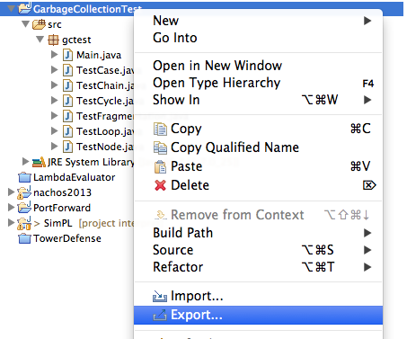
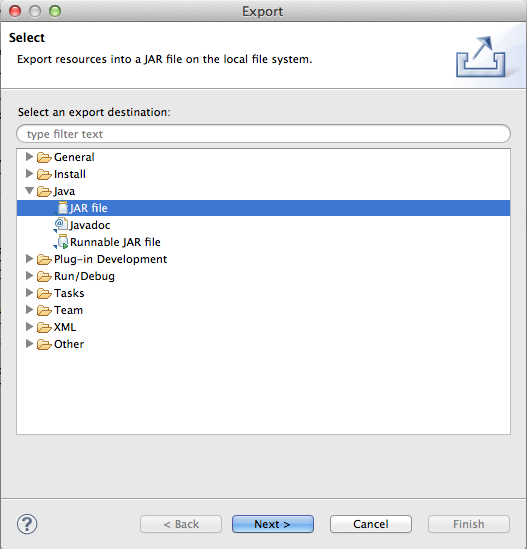
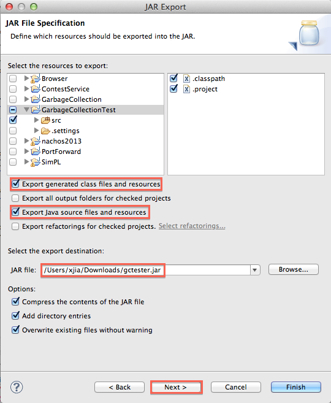
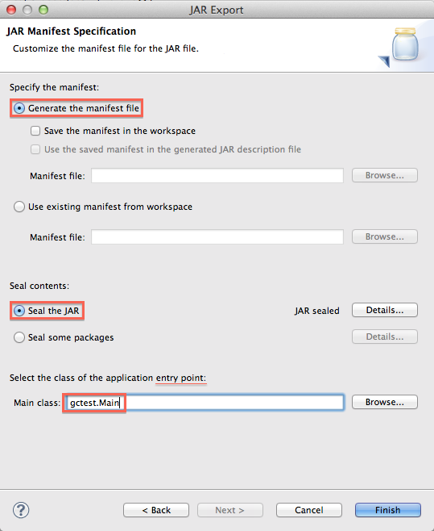

How to export a JAR file
Step 1
Right click on the name of the project which you want to export.
Click "Export..." in the popup memu.

Step 2
Click the triangle to expand "Java" and click on "JAR file" to select it.
Click "Next >" to continue.

Step 3
Click the triangle to expand your project folder,
and select "src" folder (and/or any other folder that you want to export).
- Make sure "Export generated class files and resources" is checked.
- Make sure "Export Java source files and resources" is checked.
- You may choose to check all the options.
Remember you have to choose where to save the exported JAR file.
Then click "Next >" to continue.

Step 4
Nothing special in this page. Click "Next >" to continue.

Step 5
- Choose "Generate the manifest file".
- Make sure "Save the manifest in the workspace" is unselected.
- Choose "Seal the JAR".
- Type in the name of your main class. Otherwise the JAR file is not executable.
- Click "Finish" to export the JAR file.
